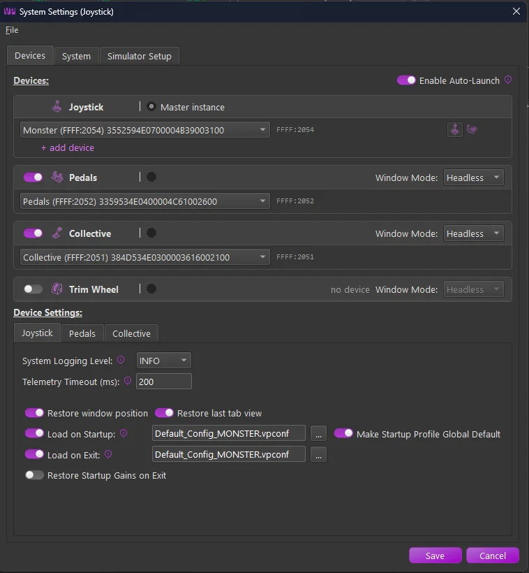
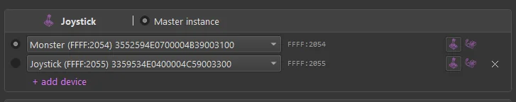
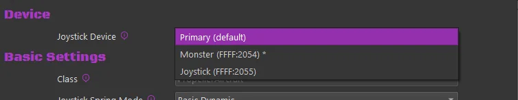

1. Devices & Instances¶
TelemFFB runs one instance per FFB device. If you fly with a single VPforce joystick base, one instance is all there is and you can mostly ignore this page. If you also have VPforce-powered pedals or a collective, a separate instance drives each device, and TelemFFB manages them for you.
1.1 Master and child instances¶
The instance you launch is the master. It owns everything global:
- The System Settings dialog opens from the master and configures everything, including each child instance’s own settings; child instances no longer carry a settings dialog of their own.
- Auto-launching, monitoring, and revealing the child instances that drive your additional devices.
Child instances each connect to their own device and render effects for it, driven by the same simulator telemetry. They can run with a normal window, minimized, or headless (no window at all).
1.2 How TelemFFB finds your devices¶
In most cases, you do not need to configure anything: on startup, the master instance enumerates the connected VPforce devices and auto-assigns any unassigned device role.
- Assignment is by the device’s name as configured in VPforce Configurator: a name containing Joystick, Pedals, Collective, or Trim assigns the device to that role.
- Each device takes at most one role, and auto-assignment never overrides an assignment you have already made.
- A device whose name identifies no role is not guessed at; assign it yourself on the Devices tab. On a first launch, TelemFFB reports the auto-assignment result and opens System Settings either way, so you can review and save the assignments (Quick Start).
To assign devices manually, or fix an auto-assignment, each device role has a selector pulldown on its card on the Devices tab, listing the connected VPforce devices. Pick the device for each role directly. If you pick a device that is already assigned to another role, TelemFFB asks whether to override the other assignment or cancel.
1.3 The Devices tab¶
These settings are found on the Devices tab of System → System Settings. They control which device each instance connects to and which instances start automatically.

The tab holds one card per device role: joystick, pedals, collective, trim wheel. Each card carries:
-
Device selector
- Select the connected device for the role. Auto-assigned devices appear pre-selected. The card shows the selected device’s USB ids (
VID:PID); the selector is the source of truth, so there is nothing to type.
- Select the connected device for the role. Auto-assigned devices appear pre-selected. The card shows the selected device’s USB ids (
-
Master instance marker
- The radio marker defines the device TelemFFB connects to when launched, the master instance. The master’s card hides the launch controls below, because the master launches itself.
-
Auto Launch
- The global Enable Auto-Launch switch above the cards turns the feature on; each card’s own switch controls whether that device’s instance starts when the master loads. A card whose auto-launch is off collapses to its header.
-
Window Mode
- How the instance’s window starts: Normal (a regular window), Minimized (started minimized to the taskbar), or Headless (no window at all; the instance runs invisibly, and everything is configured from the master).
Below the cards, the Device Settings area holds each device’s per-instance settings: logging level, telemetry timeout, window restore options, and Configurator profiles. See System Settings.
1.4 Multiple joysticks (MSFS & X-Plane)¶
If you fly with more than one stick (a center stick, a yoke, and a side stick, for example), the joystick slot can hold up to three configured devices, and each aircraft can choose which one it uses.
1.4.1 Configuring alternate devices¶
On the Devices tab, the joystick card has a + add device button. Each added row gets its own device selector and icon.

- The radio marker on a row marks the primary device. The primary is the default: every aircraft and class uses it unless its own 1.4.2 Device selection says otherwise, and it is the device the joystick instance connects to on startup.
- Selecting the marker on another row makes that device the primary when you save. The switch applies immediately; no restart is required.
- The x button removes an alternate row. The primary row cannot be removed, only replaced.
1.4.2 Choosing a device per aircraft¶
With more than one joystick configured, aircraft settings gain a Device section with a Joystick Device selector.

- Primary (default) uses whichever device is marked primary in System Settings. The
*in the list shows which named device that currently is. - Picking a named device switches to it while that aircraft is loaded, and back to the primary afterward. Nothing changes in System Settings.
Note
The Device section only appears when more than one joystick device is configured. With a single stick there is nothing to choose, and the section stays hidden.
If you later replace a configured device in System Settings, TelemFFB offers to update the aircraft settings that reference the old one.
1.5 Working with child instances¶
After starting TelemFFB with auto-launch enabled, all of the device icons appear in the master instance’s Active Devices area. From there you can monitor each device’s status and switch between devices to configure their settings; each device has its own settings for every aircraft, so your pedals and joystick are tuned independently. See Active Devices Area for details.
To bring up the window of a minimized or headless child instance:
- use the master instance’s Window menu, or
- right-click the system tray icon and use the Instances menu.